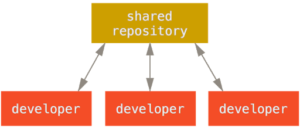

Desde seu nascimento em 2005,Git evoluiu e amadureceu para ser fácil de usar e ainda reter essas qualidades iniciais. Ele é incrivelmente rápido, é muito eficiente com projetos grandes, e ele tem um incrível sistema de ramos para desenvolvimento não linear. Como muitas coisas na vida, o Git começou com um pouco de destruição criativa e uma ardente controvérsia.
O núcleo (kernel) do Linux é um projeto de código aberto com um escopo bastante grande. A maior parte da vida da manutenção do núcleo o Linux (1991-2002), as mudanças no código eram compartilhadas como correções e arquivos. Em 2002, o projeto do núcleo do Linux começou usar uma DVCS proprietária chamada BitKeeper.
Em 2005, a relação entre a comunidade que desenvolveu o núcleo do Linux e a empresa que desenvolveu BitKeeper quebrou em pedaços, e a ferramenta passou a ser paga. Isto alertou a comunidade que desenvolvia o Linux (e especialmente Linux Torvalds, o criador do Linux) a desenvolver a sua própria ferramenta baseada em lições aprendidas ao usar o BitKeeper. Algumas metas do novo sistema era os seguintes:
DICAR:
O mais importante e ter mas do que um copia do codigos salvo no git.
INSTRUÇÕES:
Utilizamos o Git para controlo de versões em todas as fases programação do projeto: development, testing e deployment,
mantendo desta forma a integridade do mesmo.
O Git é um sistema de controle de versões utilizado pela grande parte dos programadores. Inicialmente, o Git é utilizado sobretudo para o desenvolvimento de software, mas entretanto foi adotado por muitas outras áreas.
Quando o seu projeto chega à equipa de programação são efetuadas constantes alterações e atualizações, dando origem à criação de versões. As versões permitem-nos ter um histórico das alterações realizadas no código, oferecendo a possibilidade de voltar a qualquer ponto (commit) para ver como estava o código naquela data. Desta forma, caso deseje uma versão do seu projeto sem um determinado desenvolvimento, você consegue voltar ao ponto que deseja, o chamado revert commit. Isto permite também o inverso/ voltar à implementação que retirou.
Além disso, sendo um controlador de versões, o Git permite o desenvolvimento do seu projeto por vários programadores em simultâneo, não havendo o risco de perda de informação. Ajuda a controlar o fluxo de novas funcionalidades entre os diferentes programadores, com ferramentas para análise e resolução de conflitos quando o mesmo arquivo é alterado por várias pessoas, permitindo ainda saber quais, porquê, quem e quando foram feitas as alterações.
INSTRUÇÕES:
Os commits necessitam de ser armazenados é aí que entram os ramos (branches). Um branch é como um contentor dos commits criados. Para um projeto são criados pelo menos três ramos, um para cada uma das fases do projeto.
Os branches permitem criar features que podem ser independentemente adicionadas à fase de deployment.
Desta forma, podemos em simultâneo desenvolver features (em branches independentes) como carrinho, wishlist e newsletter para apenas colocar em deployment uma ou algumas destas features. Estas são algumas das inúmeras funcionalidades que o Git oferece e utilizamos no desenvolvimento do seu produto.
Desta forma, podemos em simultâneo desenvolver features (em branches independentes) como carrinho, wishlist e newsletter para apenas colocar em deployment uma ou algumas destas features. Estas são algumas das inúmeras funcionalidades que o Git oferece e utilizamos no desenvolvimento do seu produto.
Em resumo, o Git oferece vários benefícios que agilizam o desenvolvimento de um projeto de software como rapidez nos processos pois permite a sua utilização somente em ambiente local, facilidade de fusão entre desenvolvimentos, consulta de alterações nos ficheiros, fiabilidade e um backup na cloud.
INSTRUÇÕES:
O git clone é usado sobretudo para apontar para um repositório existente e fazer um clone ou cópia deste repositório no novo diretório, em outro local. O repositório original pode estar localizado no sistema de arquivos local ou em protocolos com suporte a acesso por máquinas remotas.
INSTRUÇÕES:
Agora que o repositório está pronto, vamos falar sobre a estrutura que é mantida pelo GIT. Cada repositório local consiste em três árvores: o diretório de trabalho que contém os arquivos reais; O índice que desempenha o papel de uma área de teste e o HEAD que é um ponteiro para o último commit feito pelo usuário.
INSTRUÇÕES:
git é um software VCS local que permite aos desenvolvedores salvar snapshots de seus projetos ao longo do tempo. Geralmente é melhor para uso individual. GitHub é uma plataforma baseada na web que incorpora os recursos de controle de versões do gitHub para que possam ser usados colaborativamente.
Referências do Git:
Quer conhecer um pouco mais do Git cliquer no link aqui em baixo.